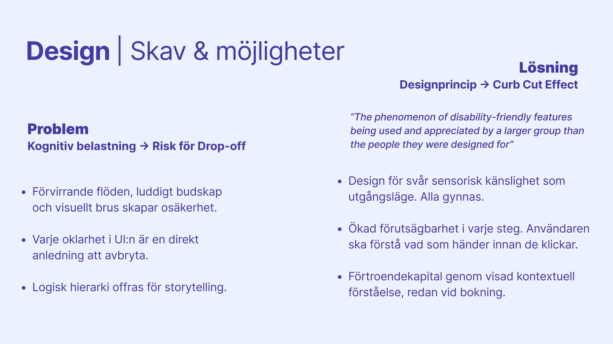
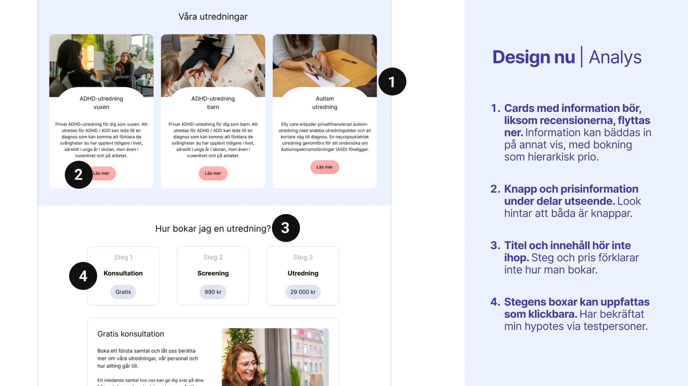
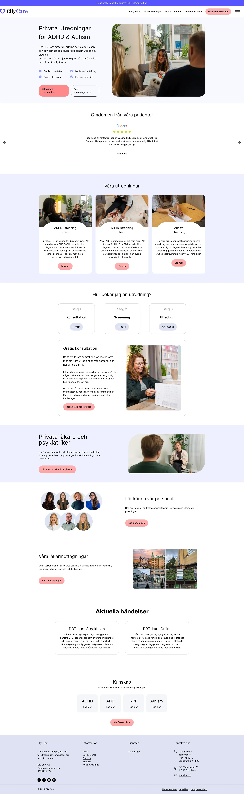
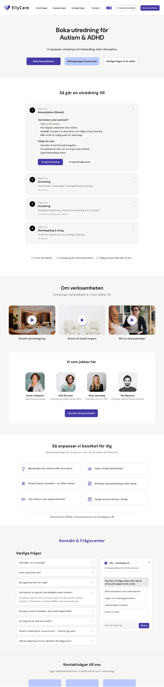
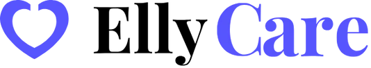
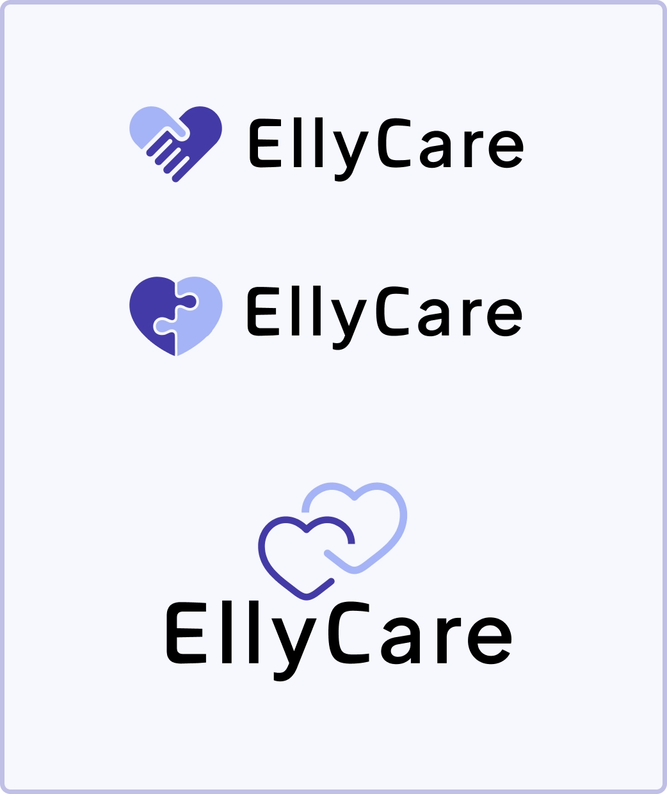
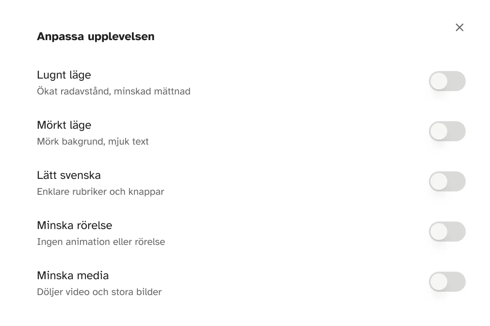

UX & UI Design — Accessibility — Branding
Inclusive Re-Design as a Business Strategy

A website in dire need of neurodivergent adjustments.
EllyCare is a private clinic for ADHD and autism assessments. During one of my recruitment steps with said company, I was tasked with an engaging challenge: create a slide deck composed of design critique, design suggestions and an analysis of the target group: adults with autism.
The issues.
Their existing website wasn't tailored to the cognitive and sensory needs of their core target group. Confusing flows, vague messaging, and visual noise create uncertainty for most users, with or without neurodivergency.
The home page had three competing CTAs, reviews placed above any explanation of the service, and a step indicator that implied a shorter process than reality. For a user who is already anxious about whether to book, cognitive load means massive friction. Every unclear element is a direct reason to leave.

Case study slide: problem and solution.
Possibilities.
The Curb Cut Effect: features designed for users with the highest sensory and cognitive demands end up being used and appreciated by a far wider group than they were built for.
It means building trust through demonstrated contextual understanding, already at the point of first contact. Remove friction for the most sensitive user, and you have removed it for everyone.
What I did.
- Website redesign prototype: information architecture, content hierarchy, visual design.
- Accessibility panel: five user-controlled settings for reduced cognitive noise.
- Brand identity revamp: new logo variants and improved color system.
- Target group analysis: 4 different personas, mapped barriers and trust signals for each.
- Marketing concepts: detailed concepts presented for each persona.
- Prototype & usability testing: tested accessibility modal with neurodivergent users.
How I did it.
- Independent case study: from audit to final prototype, in just 2 days.
- Clinical grounding: design decisions built on 10 years of experience.
- Heuristic evaluation: of the original site, before any design decisions.
- Accessibility validation: continuous contrast checks and a11y settings throughout.
- Tools: Figma + MCP integration + Claude Code, Lovable.
Doing weeks of work in a couple of days? Sure.
The task at hand was for an extensive recruitment process. I was in the final few out of 1200 applicants, and needed to give consolidated output, with a slim time frame.
I started with a breif heuristic evaluation, before any design decisions were made. Each issue was tied to a specific user barrier, not a personal design preference. The information architecture was restructured around one guiding question: what does an uncertain and potentially neurodivergent adult need to understand? And in what order?

Case study slide: audit of existing website.

Original site.
Before.
- Strong and vibrant purple accent color. Questionable legibility on promotion banner at top of page.
- Three competing CTAs without coherent design logic or UX writing.
- Hero image implied sole focus on children and was visually cluttered in itself.
- Reviews placed before the service explanation, which sacrifices hierarchical clarity for social validation.
- Heading adjacent to service explanation questions how to book. Content below doesn't answer it, at all.
- Step indicators implied a shorter process than reality.
- Step indicators non-clickable "price tags" almost identical to global button design.
After.
- Accessibility panel and mode toggle in the header for different types of sensory filtering. Control takes precedence over aesthetics.
- A more logical flow and clearer navigation, prioritized over storytelling and social signals.
- Accordions for progressive disclosure, where additional information is an active choice for the user.
- Calmer and more muted color system, while still maintaining current graphical branding feel.
- Informational videos since studies prove that video walkthroughs significantly reduce pre-visit anxiety for autistic individuals, by establishing a predictable cognitive map.
- Overall smaller videos and images, to decrease cognitive load. No automatic play, of course.
- When social signaling happens, it's mostly used for comforting, important and relevant information.

Redesign.
Original logo.

My logo variants.

Brand identity.
Colors: There was no time for an extensive new graphical profile, I decided to lean on existing colors but deepen and mute them. My goal was to lean away from the visual language of (exclusively) childrens healthcare, without giving too big of a re-brand to grasp for the company.
Fonts: Existing font Inter is well known and has good legibility, but to increase warmth just a nudge, I decided on DM Sans. In retrospect I would have chosen Atkinson Hyperlegible, instead, to accomodate for the well-known dyslexic comorbidity in the neurodivergent community.
Logo: To achieve an open, modern feel, I swapped the existing serif for a clean pairing of Exo and Plus Jakarta Sans. I explored three visual variations of the "heart theme," using two colors in each to represent the patient and caregiver as a team. The puzzle piece symbol was intentionally excluded from the final prototype due to its controversial associations.
Expected accessibility.
The accessibility settings panel was the first "aha moment" of the project. The idea presented itself during my inital audit, where the 7th of Jakob Nielsen's famous 10 usability heuristics: Flexibility and Efficiency of Use, came to mind.
There's similar existing plug-ins for browsers, but the handfull of users who guerilla tested my prototype prefered my quick mock-up, as a first entry-point for basic settings. Easy to find and requiring very little effort for the user. According to the majority: a feature that's to be expected on a website geared towards their neurodivergent target group.

Accessibility panel: Calm Mode, Dark Mode, Simple Swedish, Reduce Motion, Reduce Media.
Retrospect & reflections.
- The hardest design argument to make is one that relies on principle. The easiest connects to drop-off and revenue. This project taught me to make both at once.
- My suggestions varied in feasibility, ranging from easy to moderate, and that smörgåsbord of low-to-medium-hanging-fruit was something stakeholders appreciated.
- Looking back, there are details I would have changed, like using the more accessible Atkinson Legible font. Given the constraints of a work sample, these are lessons I'll put to use in future projects.
- The recruitment process was put on hold because of operational reasons within the company. My roadmap would have involved a comprehensive digital restructuring by aligning the branding, smoothing out the user flows, and prioritizing accessibility.
- Reworking just a couple of the issues I've pointed out should be the baseline MVP for Ellycare going forward, and a meaningful step toward the experience their users actually deserve.